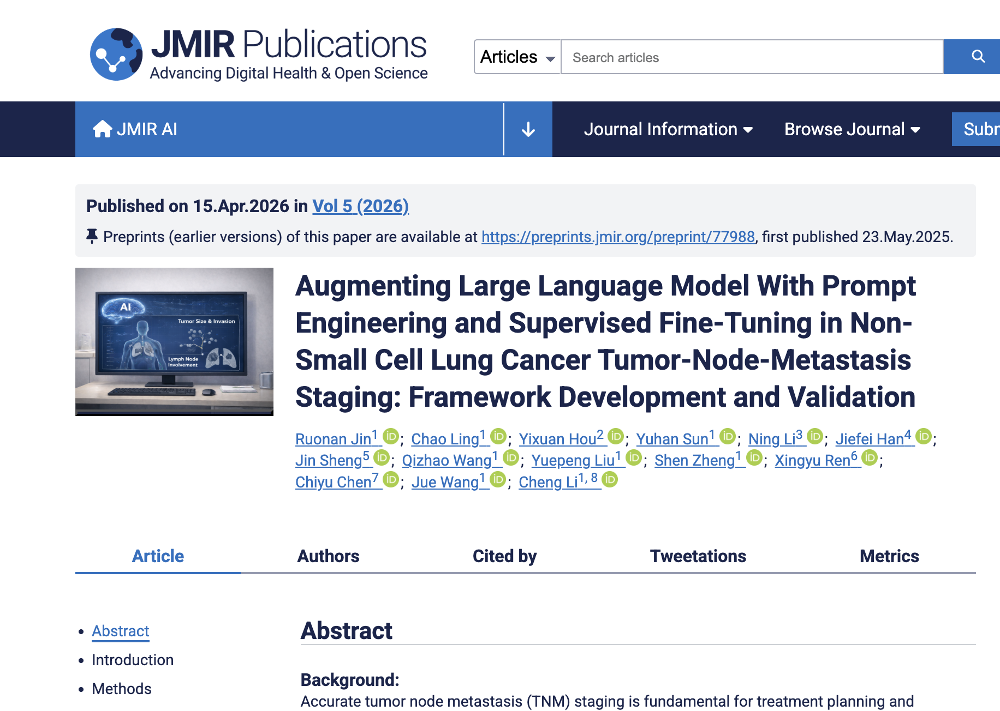

MedSeek APP
临床一线的随身 AI 助手鉴别诊断、治疗方案、用药咨询，随时提问，快速获得循证参考。
MedSeek Cowork 是面向医学科研场景的桌面级 AI 助手，融合权威医学知识库、专业证据与大模型推理能力，帮助医生更系统地推进医学科研工作。

良医汇 MedSeek 团队联合智谱 AI 及多家三甲医院资深医生，基于国产 32B 模型 GLM-4-Air，提出融合医学逻辑的 Medical-based Harness Engineering 与选择性监督微调框架，在非小细胞肺癌 TNM 分期自动判断任务中实现优于通用大模型的表现。
相关成果发表于国际医学信息学期刊 JMIR AI，标志着 MedSeek.Ai 在“医学 AI 工程化”方向上，形成了具有差异化价值的技术路径，也为基层医疗机构提供了更具可及性、安全性与成本效益的 AI 方案。
查看成果鉴别诊断、治疗方案、用药咨询，随时提问，快速获得循证参考。
适合在电脑上继续整理临床问题、文献资料和科研想法。
打开 MedSeek.Ai科研查新、综述框架、SCI 润色、论文写作，只需一次对话。
下载桌面端